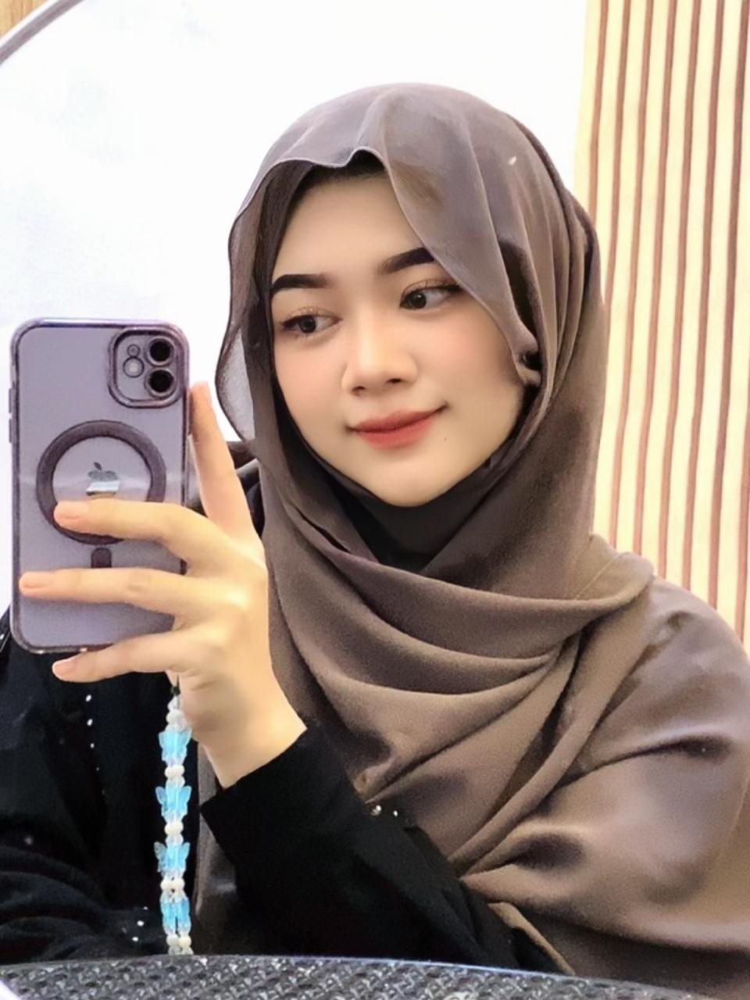

Ke-19 tahun🌸
Hari ini adalah hari istimewa, karena tepat 19 tahun yang lalu, seseorang yang luar biasa lahir ke dunia—dan orang itu adalah kamu, Lia Anjani. Di usia yang ke-19 ini, semoga kamu selalu dikelilingi oleh cinta, keberkahan, dan kebahagiaan yang tak putus-putus. Semoga langkahmu ke depan dipenuhi dengan semangat, harapan, dan pencapaian yang membanggakan. 🌈✨ Usia 19 adalah masa transisi—di mana kamu mulai semakin mengenal dirimu, membangun jati diri, dan memantapkan arah hidupmu. Tak apa jika sesekali merasa ragu, atau lelah di tengah perjalanan. Itu semua bagian dari tumbuh dan belajar. Yang penting, kamu tidak menyerah. Kamu tetap berjalan, sekecil apa pun langkahnya.
Jangan lupa untuk selalu menghargai dirimu sendiri. Kamu sudah sejauh ini, dan itu bukan hal yang mudah. Terima kasih sudah bertahan, sudah terus menjadi pribadi yang baik, dan tetap menyebarkan energi positif untuk orang-orang di sekitarmu. Aku doakan semoga semua impianmu—yang kamu simpan diam-diam dalam hati maupun yang kamu ucapkan dalam doa—perlahan satu per satu jadi nyata. Semoga kesehatan, kesuksesan, ketenangan batin, dan cinta yang tulus senantiasa menyertaimu di setiap babak baru hidupmu. 💖"Setiap senyumanmu, setiap candamu, bahkan kehadiranmu yang sederhana, bisa bikin hariku jadi lebih tenang dan lengkap. Kamu punya cara yang unik buat bikin segalanya terasa lebih ringan… lebih hidup". Aku tahu kamu kuat, cerdas, dan penuh semangat. Tapi di saat kamu merasa lelah atau ragu, ingat… Kamu nggak sendiri. Aku di sini, selalu dukung kamu, temani kamu, dan kalau diizinkan… sayangi kamu dengan tulus.
Aamiin ya Allah
From Lihqi